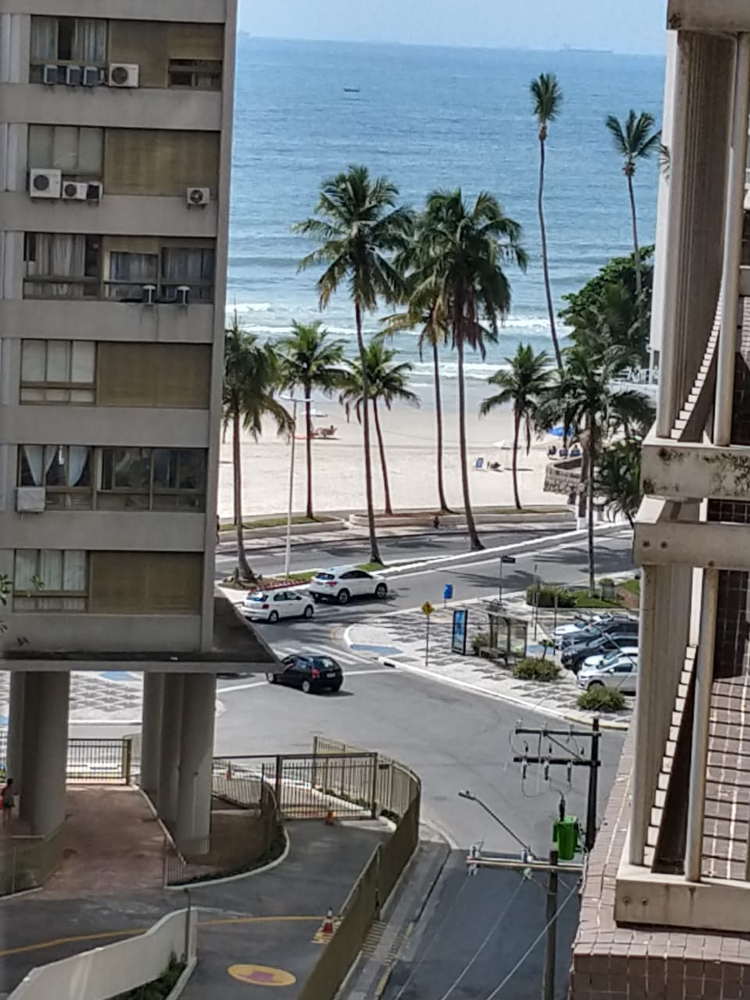
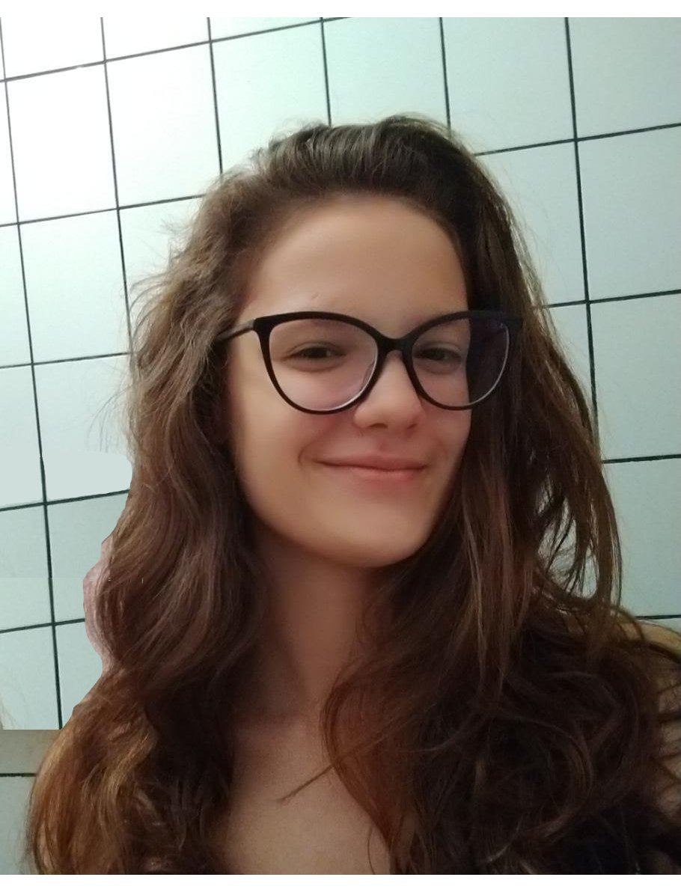
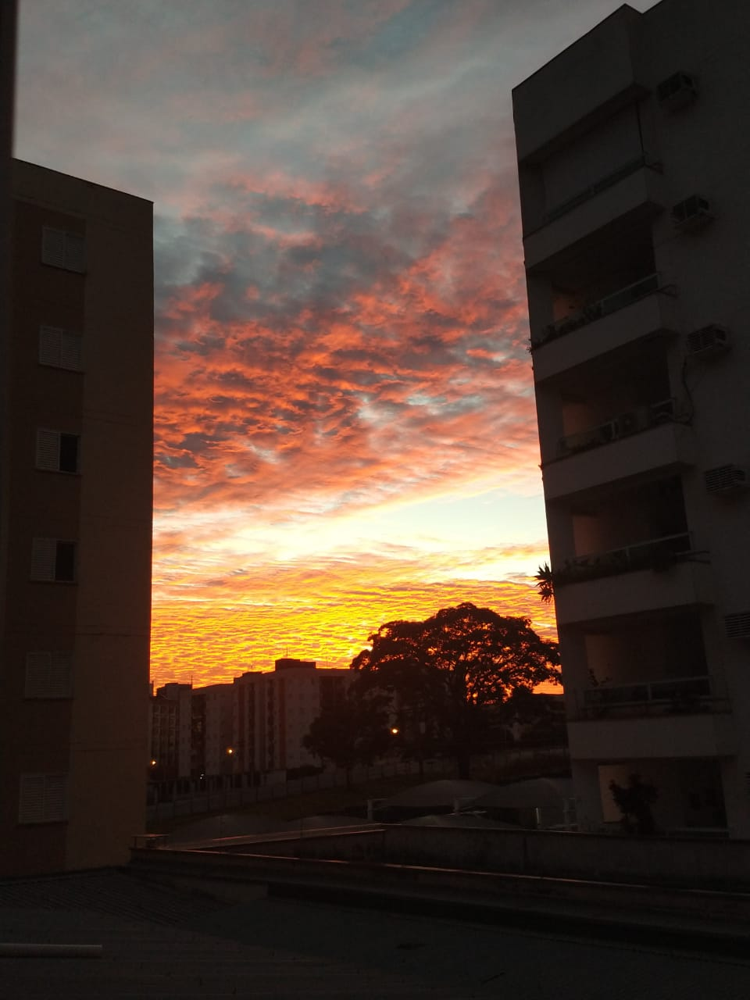

Sobre a desenvolvedora deste site: seu nome é Marina Sabino de
Carvalho. Nasceu em Uberlândia, MG, mas já mora em São José
do Rio Preto há aproximadamente 12 anos. Sua família se mudou
para Rio Preto em busca de melhores oportunidades de emprego.
Marina não tem um sonho definido, mas pensa bastante sobre morar
em outro país quando for adulta.
Também não se decidiu sobre qual profissão seguir, mas sabe
que até concluir o ensino médio já terá algo em mente.


